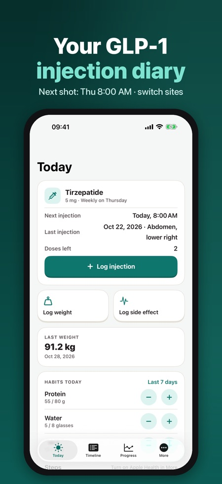
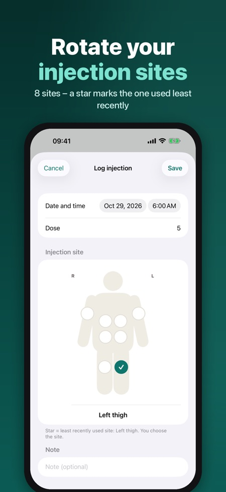
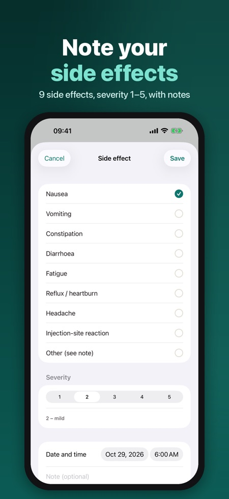

GLP-1 Diary is a private diary for people on GLP-1 medication prescribed by their doctor. Log every injection, follow your weight and note side effects, then share a clear PDF report.



It is a diary for logging GLP-1 injections, injection sites, weight and side effects. It is only a diary and gives no dose advice, titration advice, medicine-level estimate or diagnosis.
Yes. You can set a weekly or daily schedule with the dose your doctor set, and get a reminder on your day and time.
No. Lock-screen texts never show a medicine name or dose.
There is no account, and your diary stays on your iPhone, and in Apple Health only if you turn it on. Your health data is never sent anywhere; only anonymous usage statistics, which you can turn off.
You can create a PDF for any period with doses, weights and a side-effect summary, in the app language.
Pro adds full history and charts, side-effect trends, the PDF report, Apple Health sync and multiple medications. It is a yearly subscription or a one-time lifetime purchase.
You keep the injection log, reminders and the last 30 days of weight.
The app is available in 5 languages.
A private diary for people on GLP-1 medication prescribed by their doctor. Log every injection, rotate your injection sites, follow your weight and note side effects – then share a clear PDF report with your doctor.
INJECTION LOG
• Weekly or daily schedule, with the dose your doctor set
• Body map with 8 sites (abdomen in four quadrants, thighs, upper arms); a star marks the site you used least recently
• Doses left in your pens, with a reminder to get a new pen or prescription in time
REMINDERS
• Injection reminder on your day and time
• Lock-screen texts never show a medicine name or dose
WEIGHT AND HABITS
• Weight and waist with a chart and your goal line
• Daily counters for protein, water and fibre, plus steps from Apple Health
SIDE EFFECTS
• Nausea, vomiting, constipation, diarrhoea, fatigue, reflux, headache, injection-site reaction or other, severity 1–5 and notes
• Shown on the timeline next to your injections
DOCTOR REPORT
• PDF for any period: doses, weights and a side-effect summary, in the app language
PRIVATE BY DESIGN
No account. Your diary stays on your iPhone (and in Apple Health only if you turn it on). Your health data is never sent anywhere; only anonymous usage statistics, which you can turn off. No ads, no tracking. Optional Face ID lock.
PRO
Pro (yearly subscription or one-time lifetime) adds full history and charts, side-effect trends, the PDF report, Apple Health sync and multiple medications. Without Pro you keep the injection log, reminders and the last 30 days of weight.
Medicine lists include Wegovy®, Ozempic®, Mounjaro®, Saxenda®, Trulicity® and Victoza® and their strengths from the EMA product information, only so you can pick yours. The app is a diary: it gives no dose advice, no titration advice, no medicine-level estimate and no diagnosis. Always follow your doctor's instructions. Not affiliated with any manufacturer; trademarks belong to their owners.